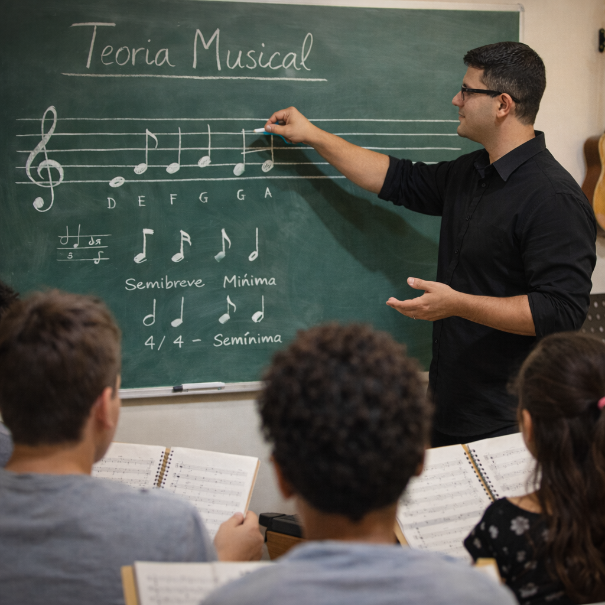
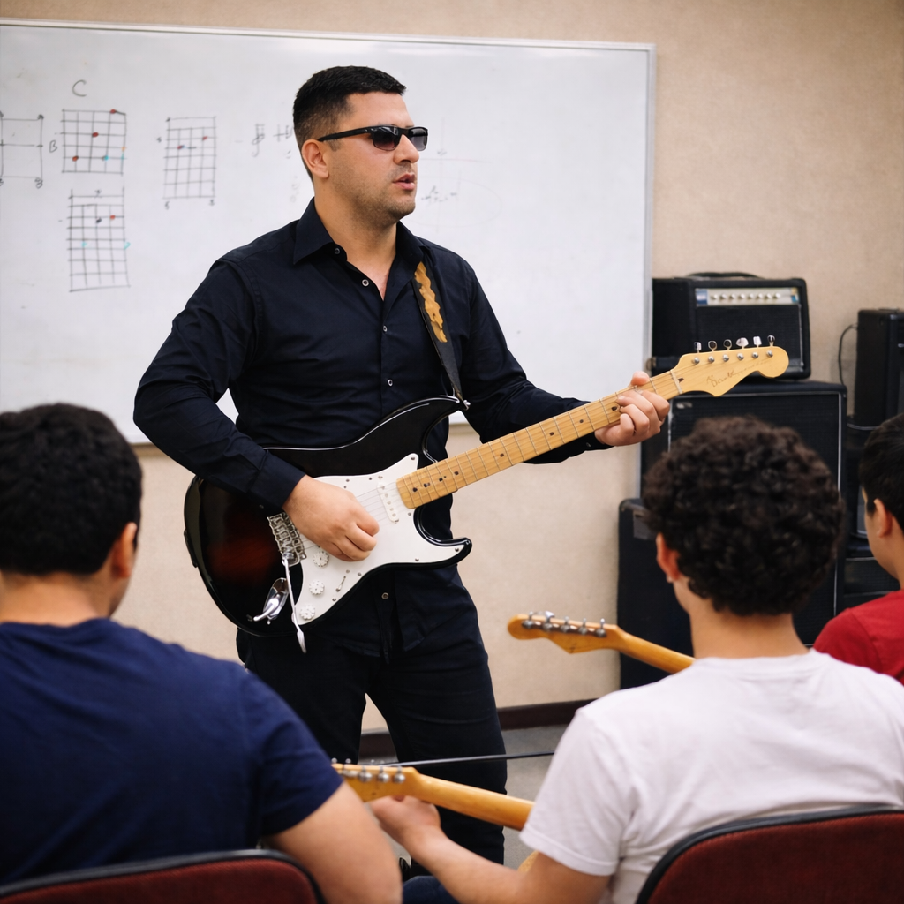
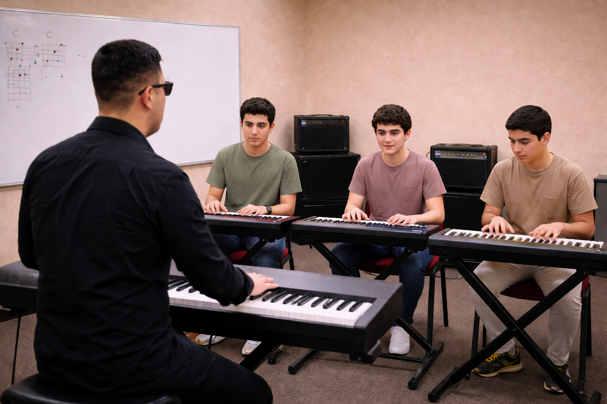
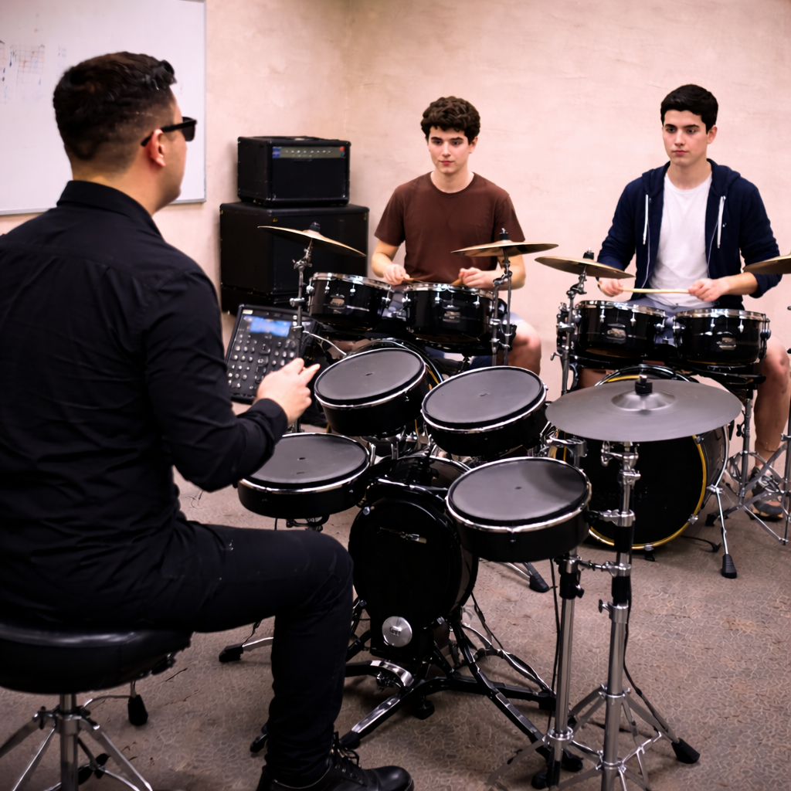

Teoria Musical
Aprenda os fundamentos essenciais da música, incluindo leitura de partituras, escalas, intervalos, harmonia e construção de acordes. Desenvolva uma compreensão profunda que permitirá tocar, compor e improvisar com segurança e liberdade.

Canto e Técnica Vocal
Desenvolva sua voz com técnicas profissionais de respiração, apoio, afinação e interpretação. Aprenda a cantar com segurança, alcançar notas com facilidade e se apresentar com confiança, seja solo ou em coral.
Violão
Domine o violão do básico ao avançado. Aprenda acordes, batidas, dedilhados, ritmos e técnicas modernas. Desenvolva independência para tocar músicas completas, acompanhar e até criar seus próprios arranjos.

Guitarra
Explore o universo da guitarra elétrica com técnicas como bends, slides, palhetada alternada e improvisação. Aprenda riffs, solos e estilos como rock, blues, jazz e worship.

Contrabaixo
Desenvolva sua base musical com o contrabaixo, aprendendo groove, tempo, slap, pizzicato e construção de linhas de baixo. Torne-se o alicerce rítmico e harmônico de qualquer banda.

Teclado
Aprenda teclado desde o básico até técnicas avançadas de acompanhamento, improvisação e arranjos. Ideal para quem deseja tocar em igrejas, bandas ou desenvolver habilidades completas como músico.

Bateria
Desenvolva coordenação, ritmo e independência com aulas completas de bateria. Aprenda levadas, viradas e estilos diversos, do básico ao avançado, com foco em performance e precisão.